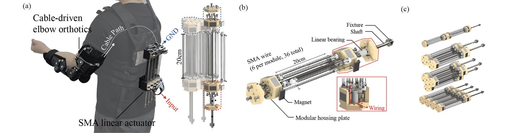
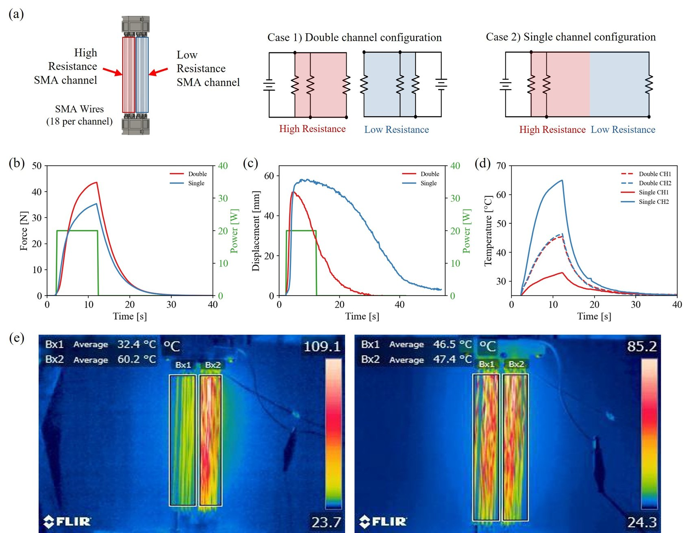
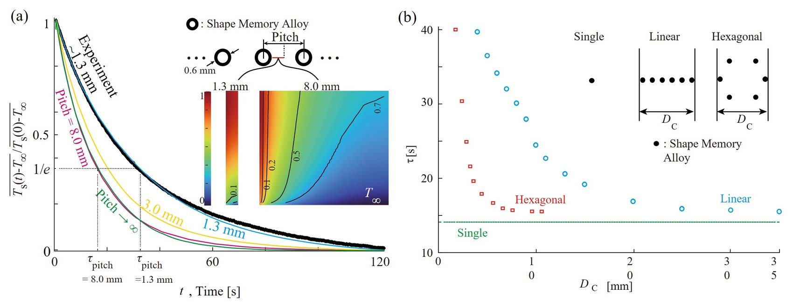
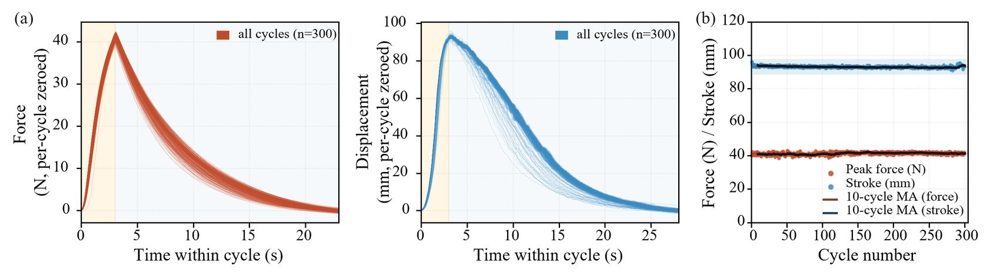
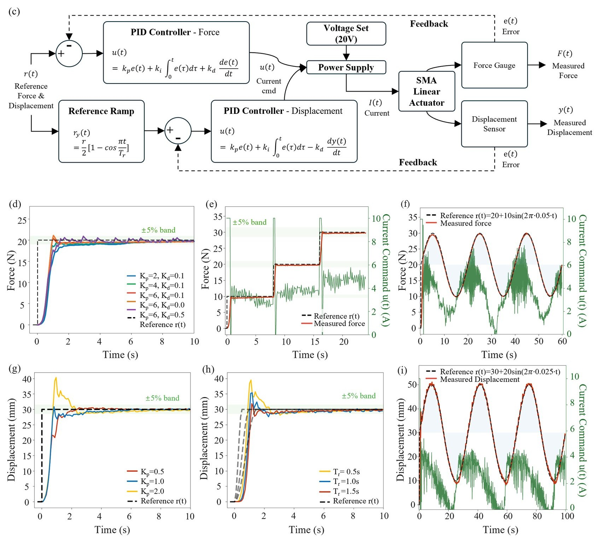
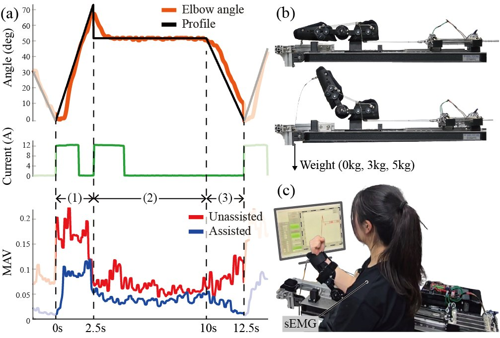
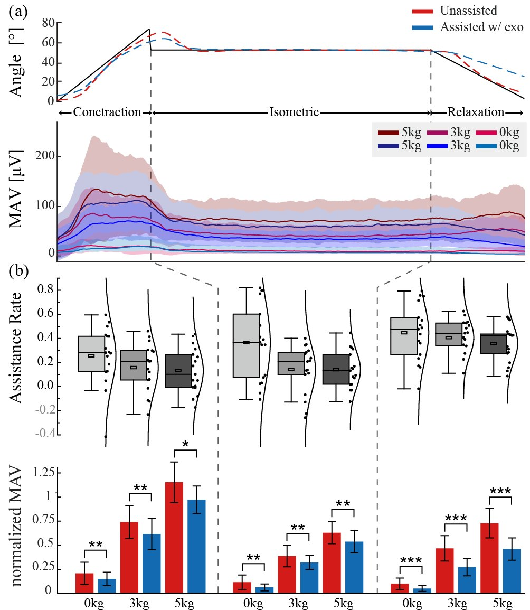

Published in Scientific Reports, 2026 (article in press)
1KAIST · 2Sookmyung Women's University · 3Hanyang University · *Equal contribution · †Co-corresponding

Shape memory alloy (SMA) actuators offer high power-to-weight ratios and a compact form, which makes them attractive for wearable assistive robotics. Their slow thermal response and limited modularity, however, hinder repeated-use assistive tasks. This paper introduces a modular SMA linear actuator that combines geometric optimization with a flexible, reconfigurable design.
A hexagonal wire arrangement increases inter-wire spacing by 70% over conventional linear bundles, alleviating thermal boundary-layer effects. Numerical simulation predicts a 35–50% reduction in cooling time constants, a trend validated experimentally at a representative inter-wire pitch. The modular architecture supports parallel and series configurations, so output force and displacement can scale independently, as shown here at the single-module level.
A dual-channel current-control method ensures thermal uniformity, and a PID algorithm sampling at 33 Hz provides closed-loop control on the benchtop. In a cable-driven elbow exoskeleton, surface electromyography (sEMG) from 17 subjects showed neuromuscular offloading of 13.2–44.7% across movement phases and loads. These results indicate that the actuator balances thermal efficiency with modularity for quasi-static and repetitive wearable assistive applications.
SMA is light and silent, but it heats fast and cools slowly, so repeated assistance is limited by the cooling phase.
Dense bundles of SMA wires have a low surface-area-to-volume ratio, which restricts heat dissipation to the air. Faster cooling is usually achieved with active cooling such as forced fluid or vibration, which adds weight and complexity to a wearable device. The question here is how far geometry alone can go.
Wires sit close together, so adjacent wires heat each other's air and cooling is slow.
Forced fluid or vibration speeds up cooling but adds hardware, mass and power.
A hexagonal arrangement enlarges wire spacing by 70% and speeds up cooling without any added cooling hardware.
The actuator uses 36 NiTi wires (0.15 mm diameter) in six hexagonal modules of six wires each. Modules are joined by neodymium magnets on their flat hexagonal faces, so the actuator can be reconfigured quickly: stacking modules in series increases displacement, and arranging them in parallel increases force. Force scaling and passive cooling are therefore decoupled.
The 36 wires are grouped into two electrical channels of three modules each (18 wires per channel). Driving the channels independently balances the heating and keeps the temperature uniform across the actuator, which gives faster activation and higher force than single-channel operation.

Simulation across a range of wire spacings predicts that the hexagonal arrangement cools faster than a linear bundle, with a 35–50% shorter cooling time constant. Experiments at a representative inter-wire pitch confirmed the trend. In the demonstrated regime the actuator reaches about 20 s per cycle, limited by a roughly 3 s relaxation delay.

Under a 1 kg load with 3 s of heating at 6 A and 25 s of cooling, the peak force stayed at 41.2 ± 0.7 N (coefficient of variation 1.7%) across 300 cycles.

Force and displacement controllers sample at 33 Hz. For displacement, a cosine S-curve reference ramp suppressed the overshoot caused by SMA elastic recovery: at Kp = 2 and Tr = 1.5 s the rise time was 0.45 s, the settling time 1.54 s and the overshoot 6.0%.

Seventeen subjects performed an elbow flexion, hold and release cycle with 0, 3 and 5 kg held at the wrist, with and without assistance. Biceps activity (mean absolute value, MAV) was significantly lower with assistance in all nine phase and load conditions.

| Phase | 0 kg | 3 kg | 5 kg |
|---|---|---|---|
| Contraction | 25.5% | 15.8% | 13.2% |
| Isometric | 36.6% | 14.2% | 14.0% |
| Relaxation | 44.7% | 40.6% | 35.7% |
Assistance rate = (MAVunassisted − MAVassisted) / MAVunassisted, mean of 17 subjects. Paired two-sided t-tests, all p ≤ 0.008.
The absolute reduction in activity grew with load, while the relative assistance fell: the actuator's force output stayed nearly constant as the load increased. The authors hypothesize that this load-invariant assistance suits progressive rehabilitation protocols, which needs clinical validation.

What the results do not show
Co-first author. I designed the modular actuator architecture and characterized its performance, implemented the multi-channel current control system, ran the force and displacement control experiments, and co-wrote the manuscript.
Choi, J.*, Choi, D.*, Jeon, M., Lee, S.-E., Shin, C., Park, W., Kim, J., Na, Y.†, & Sim, J. Y.† Modular Shape Memory Alloy Linear Actuator Driven Elbow Exoskeleton with Geometry-Based Passive Cooling Design and Performance Assessment. Scientific Reports (2026). doi:10.1038/s41598-026-64041-6
The 300-cycle endurance data are public on Zenodo. The paper is open access (CC BY 4.0); figures on this page are from the paper.
@article{choi2026modular,
title = {Modular Shape Memory Alloy Linear Actuator Driven Elbow Exoskeleton with Geometry Based Passive Cooling Design and Performance Assessment},
author = {Choi, Junhwan and Choi, Daeun and Jeon, Minji and Lee, Se-Eun and Shin, Chae-eun and Park, Woosung and Kim, Jung and Na, Youngjin and Sim, Joo Yong},
journal = {Scientific Reports},
year = {2026},
doi = {10.1038/s41598-026-64041-6},
note = {Article in press}
}